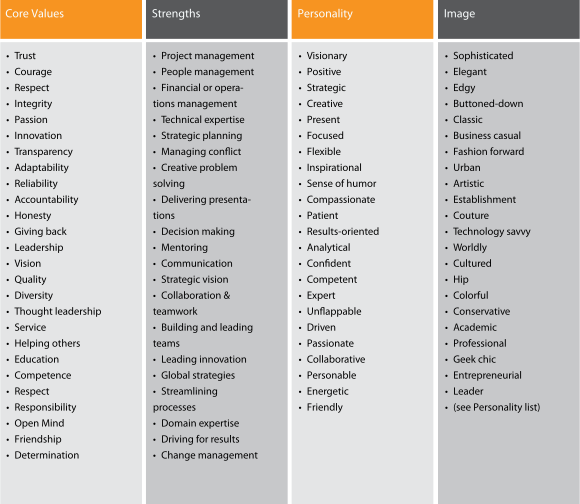
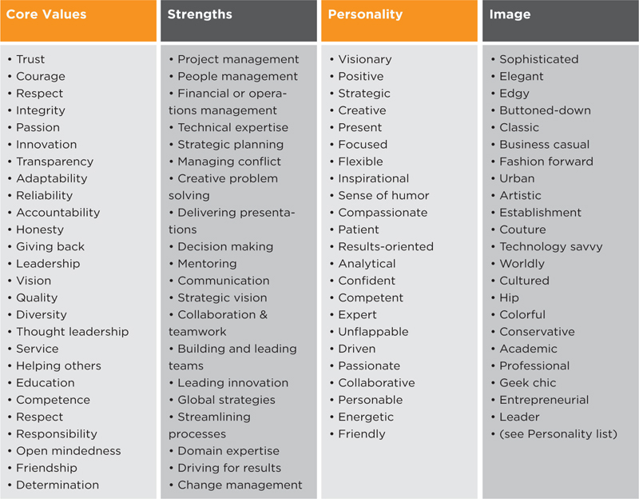

Personal Branding Assessment Questionnaire
I’m working on a personal branding exercise and would value your candid input. Please answer the questions below as best you can. Short, bulleted answers are fine. I’ve included a sample list of Brand Attribute ideas to spark your thinking.
 
To access PDF version, go to www.brandingpays.com/resources
Are there any themes that have emerged from the answers you’ve received? For instance, have people described you as “adaptable,” “flexible” and “agile”? If so, the consistent theme is the ability to adapt to changes, which is a highly desirable trait in business. You will want to include this in your branding as you move through the chapters of this book.
Now that you better understand yourself and how others think of you, how do you shape your brand? The BrandingPays™ System (Figure 1.6) includes all the steps you need to take to figure out your cake and icing and communicate it to the world.
Figure 1.6